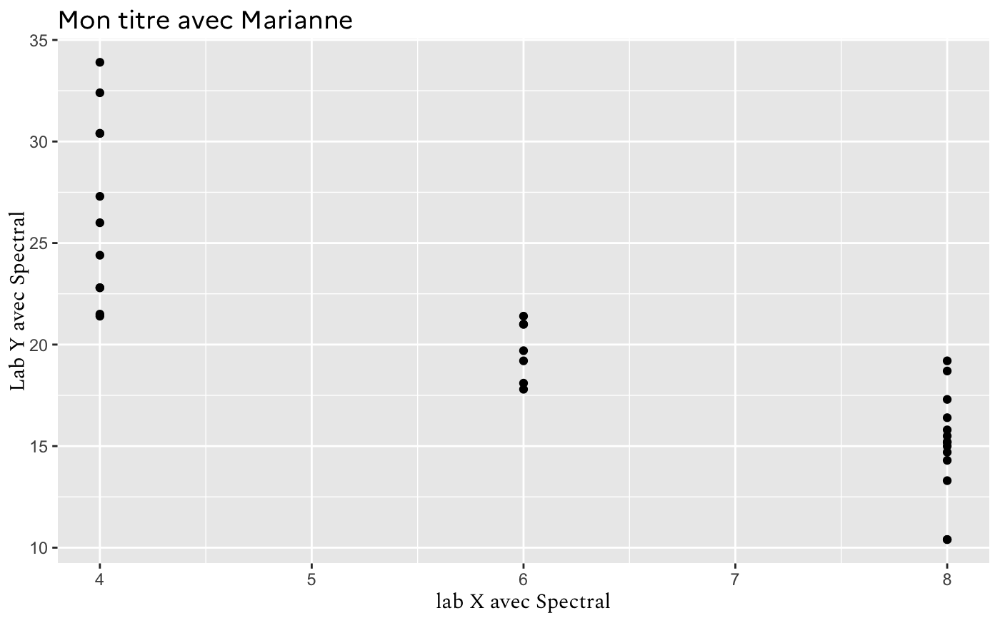

R/fonts.R
check_fonts_in_r.RdTest if fonts are available on the system and import them in R
check_fonts_in_r( fonts = c("Marianne", "Spectral"), import = TRUE, verbose = TRUE )
| fonts | Vector of fonts. |
|---|---|
| import | Logical. Whether to import |
| verbose | List fonts to install if needed. |
For fonts to be used, they need to be installed on the machine.
# \donttest{ check_fonts_in_r(import = FALSE)#> Warning: To use the complete ggplot theme_gouv(), you need #> to install the following fonts on your computer: #> Marianne, Spectral. #> #> To install, see for instance: #> https://www.howtogeek.com/192980/how-to-install-remove-and-manage-fonts-on-windows-mac-and-linux/ #> Run gouvdown::check_fonts_in_r() after fonts installation.#> Marianne Spectral #> FALSE FALSE# Test if working library(ggplot2) ggplot(mtcars) + geom_point(aes(cyl, mpg)) + labs(title = "Mon titre avec Marianne", x = "lab X avec Spectral", y = "Lab Y avec Spectral") + theme(title = element_text(family = "Marianne"), axis.title.x = element_text(family = "Spectral"), axis.title.y = element_text(family = "Spectral"))# }